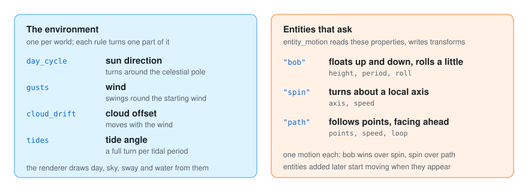
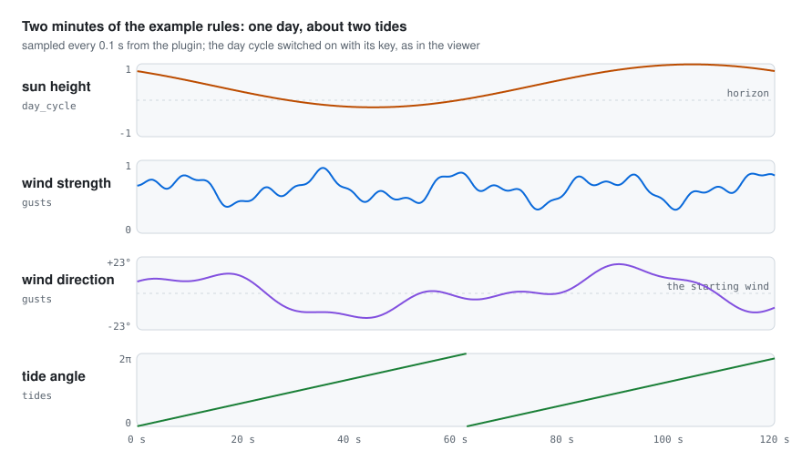
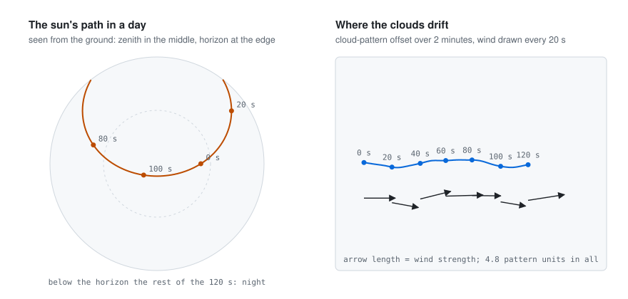
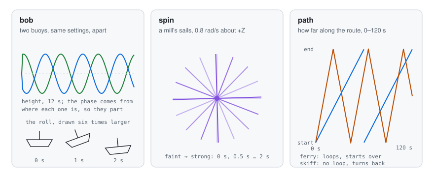

A still scene feels like a photograph. The motion plugin makes it feel alive: the sun crosses the
sky, the wind picks up and dies down, clouds drift past, the sea rises and falls, boats bob and mill
sails turn. It works in real time, while you watch the 3D scene. It changes the environment (sun,
wind, clouds, tide) and the transforms of entities that ask for a motion. Its rules belong on a
realtime clock; the speed keys of the viewer (, .) and the pause (P) apply to them.

| Rule | What it does |
|---|---|
day_cycle |
Turns the sun around the celestial pole once every seconds_per_day (120); the stars follow it, and the renderer derives day, twilight and night from the sun’s height |
gusts |
Varies the wind’s strength (variation, 0.5) and direction (veering, 0.35 rad) around the wind the world started with; plants marked to sway bend with it and clouds drift |
cloud_drift |
Moves the clouds with the wind (speed, 0.05) |
tides |
Turns the tide angle a full turn per period (period_seconds; 0 = 12.42 h in proportion to seconds_per_day). The tide’s heights and phases come with the scene; the renderer raises the water from them |
Each rule only changes what the world already has: with no sun direction or celestial pole there is no day cycle, with no wind there are no gusts, and so on.

The strips above are two minutes of examples/living-scene.yaml, with the day cycle switched on by
its key. With seconds_per_day: 120 the sun goes round once. The wind swings around where it
started and never quite repeats: it is a sum of three sines whose periods do not divide each other.
The tide period is the 12.42 hours of the principal lunar semidiurnal tide (known as M2: high water
twice a day, a little later each day), kept in proportion to the day, so 120 × 12.42 / 24 ≈ 62 seconds.

The sun turns around the celestial pole, so it rises, climbs and sets along an arc; the rest of the
day it is below the horizon. The clouds move with the wind, faster when it blows harder: at
no wind at all they still creep, at 0.2 × speed, and at strength 1 they move at 1.2 × speed.
entity_motion moves the entities that ask for it in their properties. glTF node extras arrive as
properties, so a scene can ask for motions without any code.
| Property | Motion |
|---|---|
"bob": {"height": h, "period": s, "roll": radians} |
Floats up and down with a slight roll (a boat) |
"spin": {"axis": [x, y, z], "speed": radians per second} |
Turns around a local axis (a mill’s sails) |
"path": {"points": [[x, y, z], …], "speed": units per second, "loop": true} |
Follows the points facing where it goes (+Z forward); without loop it turns around at the end |
An entity takes one motion: bob wins over spin, spin over path. Entities added later by other plugins start moving as soon as they appear: the rule reads entities with those properties.
What each key is when it is left out:
| Motion | Key | When left out |
|---|---|---|
| bob | height |
0.001 world units |
| bob | period |
4 seconds |
| bob | roll |
0.03 radians |
| spin | axis |
[0, 1, 0], upright |
| spin | speed |
1 radian per second |
| path | speed |
1 world unit per second |
| path | loop |
true |

cd ../go-simulator
go run ./cmd/simulator -rules ../go-simulator-motion/examples/living-scene.yaml scene.glb
examples/living-scene.yaml runs the plugin with go run; after go install the command can be
just [go-simulator-motion]. During development go-simulator and go-renderer are used from the
folders next to this one (replace in go.mod). More in getting started.